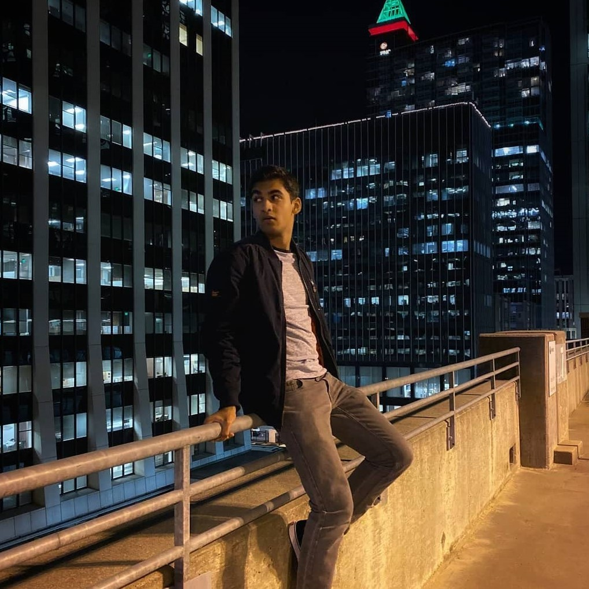

About Me

Hi, my name's Kusal Samarakoon
I take pictures of all sorts of stuff
I'm a student at UNC Charlotte majoring in Data Science
But as you can see, I'm also very interested in photography
Check out the gallery page or my instagram for more photos!